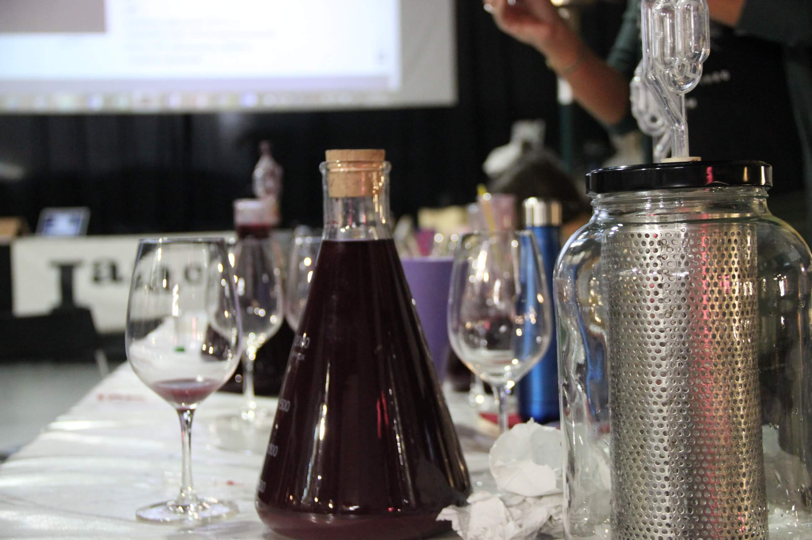
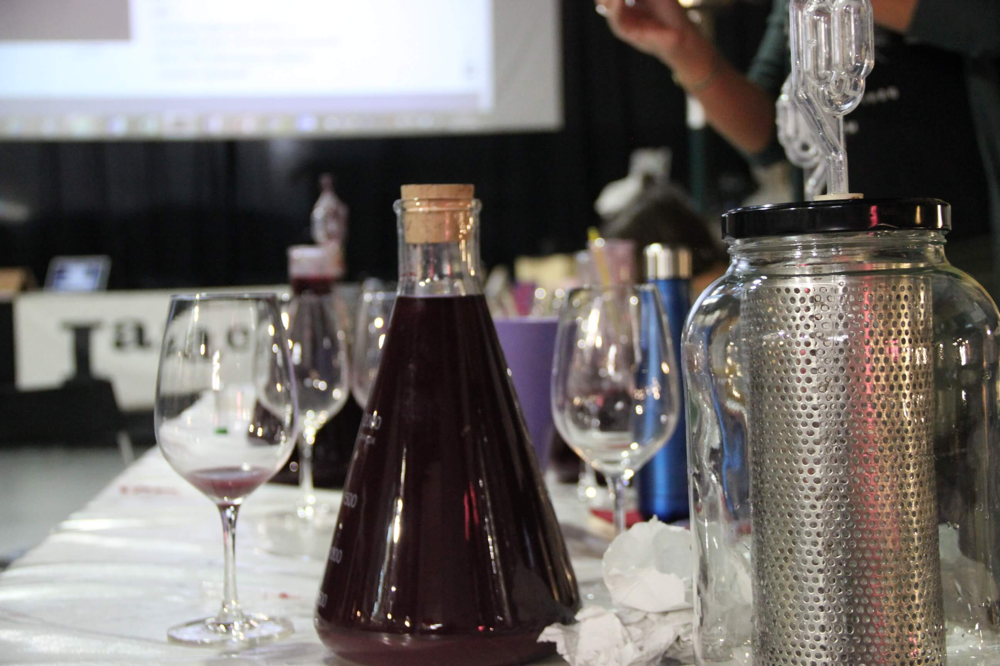

¿QUÉ ES?
El Winemakers Lab es un programa de formación, investigación y desarrollo donde los aficionados tienen la formación, las tutorías de seguimiento, los kits de elaboración, el laboratorio para realizar las analíticas, y una gran variedad de uvas de los viñedos de Cataluña de nuestra red de viticultores para realizar tus descubrimientos y aprendizajes.
El proyecto nace de una iniciativa conjunta entre el Fab Lab Barcelona | IAAC y el Espai del Vi Català. Las actividades que conectan el mundo del vino con las tecnologÍas avanzadas estarán ubicadas en el corazón del 22@ del Poble Nou. El proyecto revoluciona la forma en que entendemos el vino y su rol con los ciudadan@s como productor@s e innovador@s.

 

ACTIVIDADES

TALLERES
Talleres para aprender a hacer tu propio vino.
¿Que necesitas para poder explorar y aprender a hacer un vino?
Las uvas para fermentar los utensilios donde hacer las fermentaciones, la estabilización y las crianzas de sus resultados un sencillo laboratorio donde poder hacer los análisis que nos ayuden a acompañar el proceso.
Podrás hacer vinos “tranquilos” como tintos, blancos y rosados, y vinos espumosos como los Ancestrales de una sola fermentación a los cavas de dos fermentaciones.
Y en cualquier momento del año, porque cada vendimia empaquetamos y guardamos las uvas en congeladores a -18º.
WINE LAB
Todos los recursos del Fab Lab para que puedas diseñar y fabricar los utensilios, hacer los sensores e instrumentos que la viticultura personal te pueda requerir.
Construye tu filtro para mantener las pieles húmedas y en contacto con el mosto durante la fermentación.
Midiendo densidades durante la fermentación sin la utilización de probetas y densímetros.
Hacking de una nevera de camping para fermentar a temperaturas controladas.
Bioplásticos con los hollejos de las uvas, una apuesta por las economías circulares.
Construyamos de un agitador para la estabilización del vino en el matraz de descube.
Introducción al uso de las herramientas básicas del Fab Lab (impresoras 3D, Cortadora láser, y Arduino).

SEMINARIOS Y CONFERENCIAS
Seminarios, conferencias, catas explicativas, talleres y mesas redondas para absorber la sabiduría y la experiencia de los elaboradores profesionales. Conocimientos complementarios útiles para avanzar en los secretos del winemaking.
Los defectos del vino: Aprender a catar desde la óptica del enólogo.
Correcciones: técnicas para lograr ese vino que tienes en mente.
La crianza en los vinos, ¿qué buscamos con esto?
La visita del profesional: compartir con las enólogas y enólogos sus experiencias y la cata de sus vinos.
CONTACTO
Team
LLUIS ROMERO

MIGUEL FIGINI

Tomas Diez
GUILLEM CAMPRODON

MATIAS VERDERAU
MANUELA REYES

EDUARDO CHAMORRO
Para más información envíanos un correo a matias@fablabbcn.org o llámanos al +34 609 36 41 26